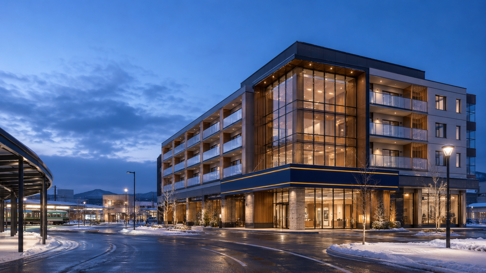
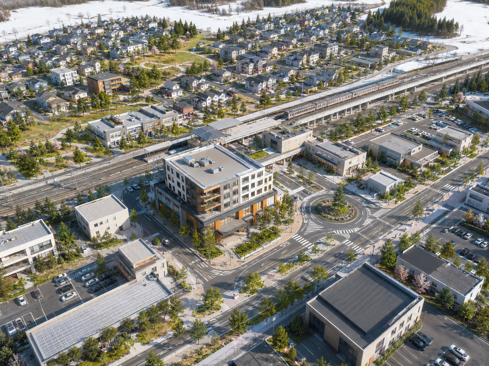
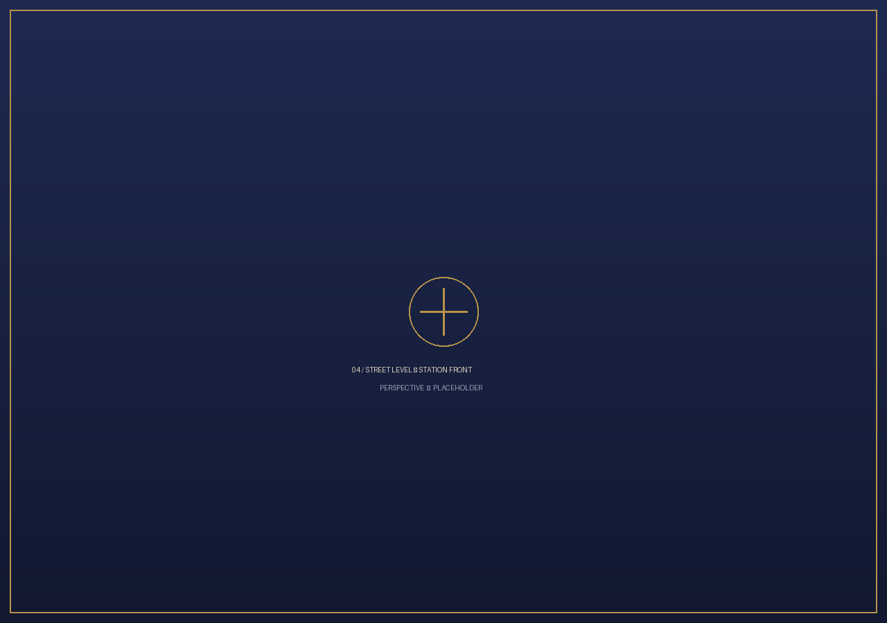
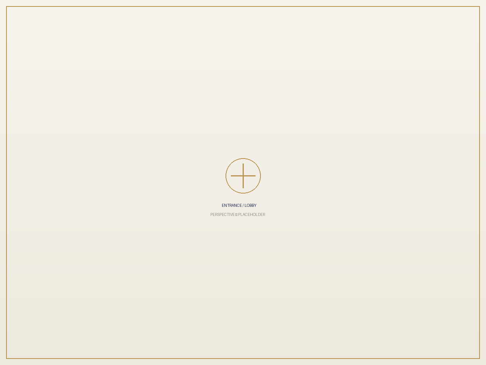

Vision — 完成予想
この土地に、未来を描く。
容積率300%・約579坪のポテンシャルを可視化した完成予想イメージです。実際の建築計画は買主様の事業構想に応じて自由に設計いただけます。

駅前ランドマークの夜景予想ロータリー正面に建つ中層複合施設のイメージ（完成予想）




※ 掲載のパースはすべて完成予想イメージであり、建築計画・規模・用途を確約するものではありません。実際とは異なります。